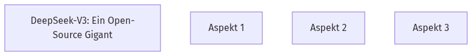
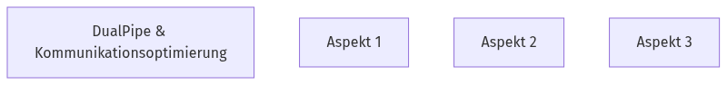

DeepSeek-V3: Ein Open-Source Gigant
Hast du dich je gefragt, wie Open-Source-LLMs mit den Großen mithalten? 🚀 DeepSeek-V3 ist ein riesiges Mixture-of-Experts (MoE) Modell mit 671 Milliarden Parametern, von denen 37 Milliarden pro Token aktiviert werden. Es wurde entwickelt, um die Grenzen der Open-Source-Modellfähigkeiten zu erweitern und die Lücke zu Closed-Source-Modellen zu schließen.
🧠
Quick Check
Wie viele Parameter werden in DeepSeek-V3 pro Token aktiviert?
DeepSeek-V3 ist ein MoE-Modell mit 671B Parametern, von denen 37B für jeden Token aktiviert werden.
DeepSeek-V3: Modellübersicht

Klicke auf die verschiedenen Bereiche des Modells, um mehr über seine Struktur zu erfahren.
Effiziente Architektur: MLA & DeepSeekMoE
Möchtest du wissen, wie DeepSeek-V3 Leistung und Kosten optimiert? ⚙️ DeepSeek-V3 nutzt Multi-head Latent Attention (MLA) für effiziente Inferenz und DeepSeekMoE für kostengünstiges Training. Diese Architekturen wurden bereits in DeepSeek-V2 validiert. Sie sind entscheidend, um robuste Modellleistung bei Effizienz zu gewährleisten.
🧠
Quick Check
Welche Architektur wird in DeepSeek-V3 für kostengünstiges Training verwendet?
DeepSeek-V3 nutzt DeepSeekMoE für kostengünstiges Training.
Innovative Strategien: Lastausgleich & MTP
Was macht DeepSeek-V3 über seine Basisarchitektur hinaus so besonders? ✨ DeepSeek-V3 führt zwei neue Strategien ein. Erstens, eine Auxiliary-Loss-Free-Strategie für Lastausgleich, die Leistungsverluste minimiert. Zweitens, ein Multi-Token Prediction (MTP) Trainingsziel, das die Gesamtleistung auf Benchmarks verbessert.
🧠
Quick Check
Welches Ziel verfolgt die Auxiliary-Loss-Free-Strategie in DeepSeek-V3?
Die Auxiliary-Loss-Free-Strategie dient der Minimierung des Leistungsverlusts, der beim Lastausgleich entsteht.
DeepSeek-V3: Strategien

Entdecke die zwei innovativen Strategien, die DeepSeek-V3 verbessern.
FP8 Mixed Precision Training
Wie erreicht DeepSeek-V3 eine so hohe Trainingseffizienz? ⚡ DeepSeek-V3 implementiert ein FP8 Mixed Precision Training Framework. Dies ermöglicht beschleunigtes Training und reduziert den GPU-Speicherverbrauch. Es ist das erste Mal, dass FP8 auf einem extrem großen Modell validiert wurde.
🧠
Quick Check
Welche Vorteile bietet das FP8 Mixed Precision Training in DeepSeek-V3?
Das FP8 Mixed Precision Training ermöglicht beschleunigtes Training und reduziert den GPU-Speicherverbrauch.
DualPipe & Kommunikationsoptimierung
Wie überwindet DeepSeek-V3 Kommunikationsengpässe beim Training? 🔗 Das Modell nutzt den DualPipe-Algorithmus für effiziente Pipeline-Parallelität, der Pipeline-Bubbles reduziert und Kommunikation durch Überlappung mit Berechnungen verbirgt. Effiziente Cross-Node All-to-All Kommunikations-Kernels sind ebenfalls integriert.
🧠
Quick Check
Was ist der Hauptvorteil des DualPipe-Algorithmus in DeepSeek-V3?
Der DualPipe-Algorithmus hat weniger Pipeline-Bubbles und verbirgt den Großteil der Kommunikation während des Trainings durch Computation-Communication Overlap.
Kommunikations-Meister

Verstehe, wie DeepSeek-V3 die Kommunikation beim Training optimiert.
Stabiles Vortraining von DeepSeek-V3
Wie wird DeepSeek-V3 überhaupt trainiert? 📚 DeepSeek-V3 wird auf 14.8 Billionen hochwertigen und diversen Tokens vortrainiert. Dieser Prozess ist bemerkenswert stabil; es gab während des gesamten Trainingsprozesses keine nicht behebbaren Verlusteinbrüche oder Rollbacks.
🧠
Quick Check
Auf wie vielen Tokens wird DeepSeek-V3 vortrainiert?
DeepSeek-V3 wird auf 14.8T (Billionen) hochwertigen und diversen Tokens vortrainiert.
Kontext & Post-Training
Was passiert nach dem Vortraining von DeepSeek-V3? 🧠 Nach dem Vortraining erfolgt eine zweistufige Kontextlängenerweiterung auf bis zu 128K. Anschließend wird ein Post-Training durchgeführt, inklusive Supervised Fine-Tuning (SFT) und Reinforcement Learning (RL), um das Modell an menschliche Präferenzen anzupassen.
🧠
Quick Check
Welche Methoden werden im Post-Training von DeepSeek-V3 angewendet?
Das Post-Training umfasst Supervised Fine-Tuning (SFT) und Reinforcement Learning (RL).
Nach dem Vortraining
Verfolge den Weg von DeepSeek-V3 nach dem initialen Training.
Die Kosten von DeepSeek-V3
Wie viel kostet es, ein Modell wie DeepSeek-V3 zu trainieren? 💰 Die gesamten Trainingskosten von DeepSeek-V3 belaufen sich auf 2.788 Millionen H800 GPU-Stunden. Bei einem angenommenen Mietpreis von 2 $ pro GPU-Stunde entspricht das insgesamt nur 5.576 Millionen US-Dollar.
🧠
Quick Check
Wie hoch sind die Gesamtkosten für das Training von DeepSeek-V3 in US-Dollar, basierend auf dem angenommenen Mietpreis?
Die Gesamtkosten belaufen sich auf 5.576 Millionen US-Dollar, basierend auf 2.788M GPU-Stunden und einem Mietpreis von 2 $ pro GPU-Stunde.
DeepSeek-V3: Leistung & Benchmarks
Ist DeepSeek-V3 wirklich so leistungsstark, wie es klingt? 🏆 DeepSeek-V3-Base ist das derzeit stärkste Open-Source-Basismodell, besonders in Code und Mathematik. Die Chat-Version übertrifft andere Open-Source-Modelle und ist vergleichbar mit führenden Closed-Source-Modellen wie GPT-4o und Claude-3.5-Sonnet.
🧠
Quick Check
In welchen Bereichen ist DeepSeek-V3-Base besonders stark?
DeepSeek-V3-Base ist das derzeit stärkste Open-Source-Basismodell, besonders in Code und Mathematik.
Visual Title Here
Visual description and instructions here...